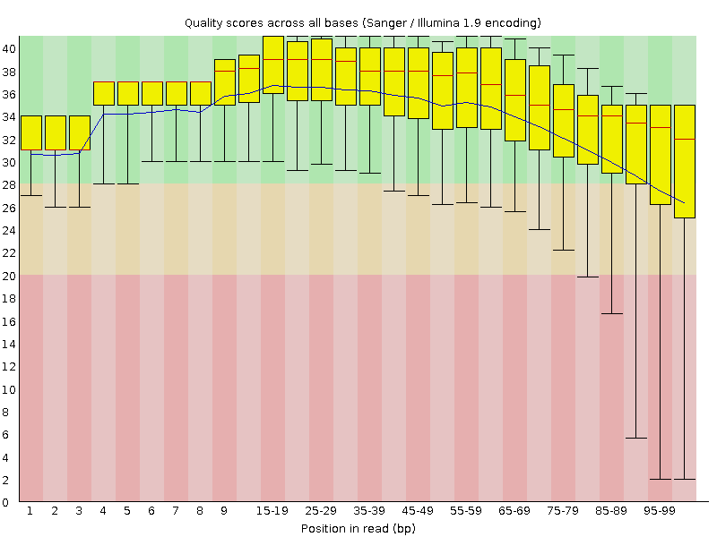
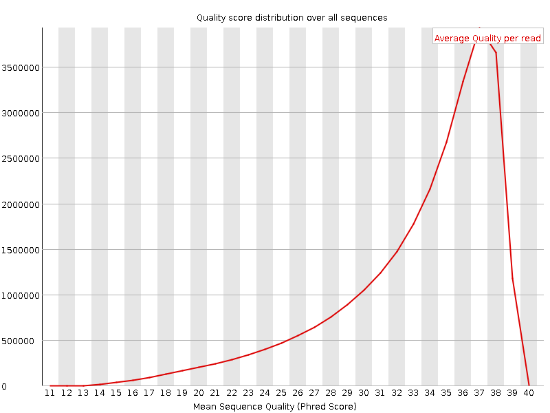
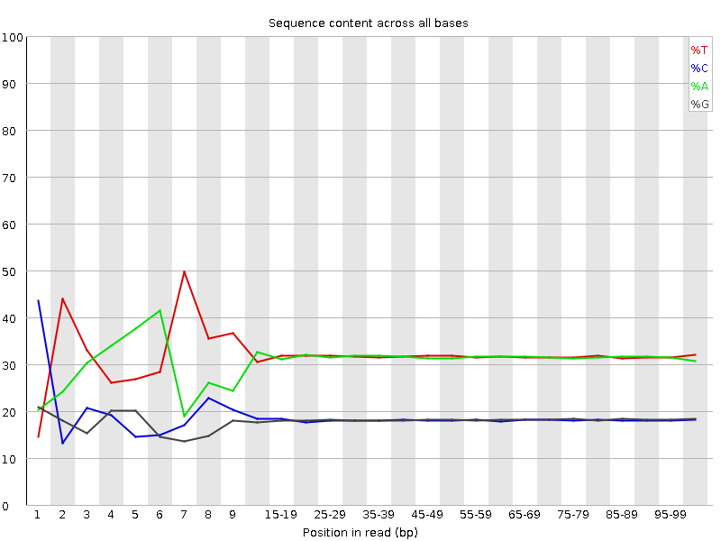
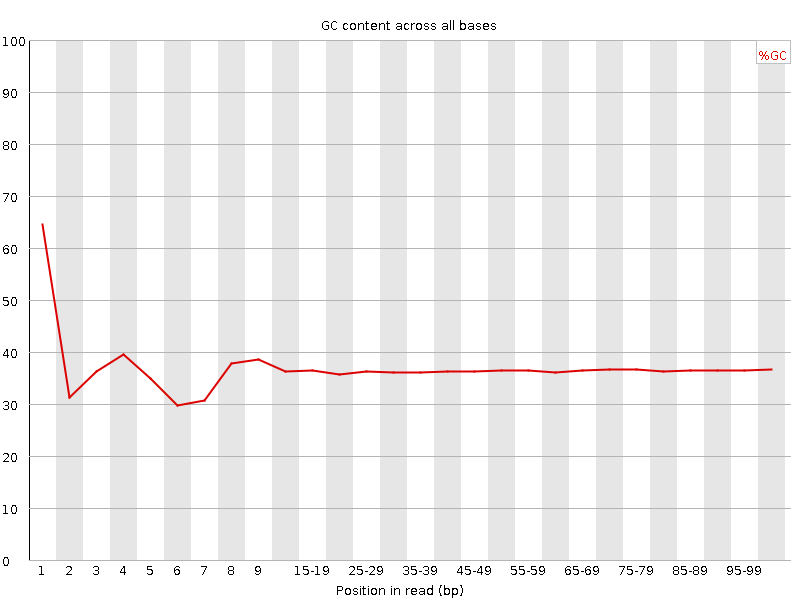
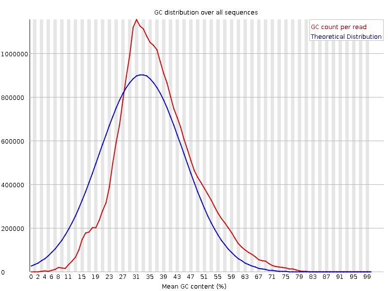
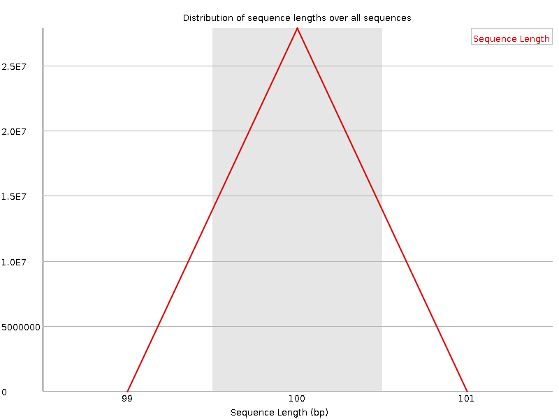
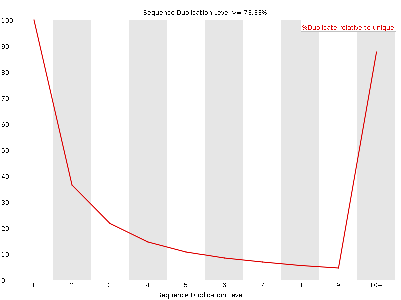
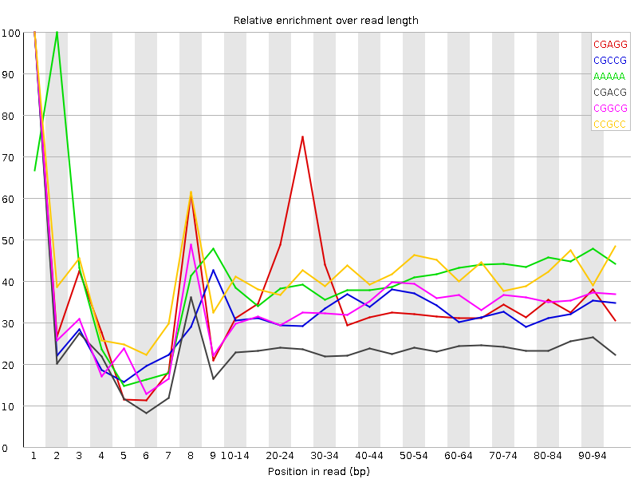

![[OK]](Icons/tick.png) Basic Statistics
Basic Statistics
| Measure | Value |
|---|---|
| Filename | c3_2.fq |
| File type | Conventional base calls |
| Encoding | Sanger / Illumina 1.9 |
| Total Sequences | 27851575 |
| Filtered Sequences | 0 |
| Sequence length | 100 |
| %GC | 36 |
Per base sequence quality

Per sequence quality scores

![[FAIL]](Icons/error.png) Per base sequence content
Per base sequence content

Per base GC content

Per sequence GC content

Per base N content

Sequence Length Distribution

Sequence Duplication Levels

![[WARN]](Icons/warning.png) Overrepresented sequences
Overrepresented sequences
| Sequence | Count | Percentage | Possible Source |
|---|---|---|---|
| CTAATTTTCATCTTAATTCAACATCGAGGTCGCAAACATCTTTATCTATA | 95203 | 0.3418226796868759 | No Hit |
| CTTTCGTACAATTAATTAATATTTTATTATAGATAGAAACCAATCTGACT | 73383 | 0.2634788158299845 | No Hit |
| CTTTGTACAGTCAACATACTGCAGCTATTTAAAATAATTCATTGAGCAGA | 35319 | 0.12681149988824691 | No Hit |
| CAAAAACATGTCCTGTTGATTATAATTTTAGGTCGATCTGCTCAATGAAT | 34149 | 0.1226106602588902 | No Hit |
| GTCCTTTCGTACAATTAATTAATATTTTATTATAGATAGAAACCAATCTG | 30639 | 0.11000814137082016 | No Hit |
Kmer Content

| Sequence | Count | Obs/Exp Overall | Obs/Exp Max | Max Obs/Exp Position |
|---|---|---|---|---|
| CGAGG | 2273185 | 2.4214115 | 6.6172514 | 1 |
| CGCCG | 1274575 | 2.2848642 | 6.9459853 | 1 |
| AAAAA | 18423060 | 2.2235494 | 5.4065037 | 2 |
| CGACG | 2023730 | 2.12646 | 8.782819 | 1 |
| CGGCG | 1165820 | 2.1186326 | 6.124005 | 1 |
| CCGCC | 1182955 | 2.091867 | 5.0142417 | 1 |
| CGCGG | 1100305 | 1.999573 | 6.935334 | 1 |
| TCGAG | 3091400 | 1.8840327 | 5.1176014 | 7 |
| CTCGA | 2982155 | 1.7928101 | 9.500086 | 1 |
| GCGCC | 996885 | 1.7870638 | 5.3421254 | 3 |
| CGCGA | 1664695 | 1.7491995 | 6.6441684 | 1 |
| CGCGC | 937555 | 1.680706 | 5.787456 | 1 |
| CGATC | 2745805 | 1.6507213 | 5.4120393 | 4 |
| GTCGA | 2674440 | 1.629919 | 5.3625975 | 1 |
| CTGGA | 2665300 | 1.6243489 | 7.013058 | 1 |
| ATCGA | 4580710 | 1.61416 | 5.2850785 | 6 |
| CGCCA | 1545760 | 1.6022032 | 6.127343 | 1 |
| CCGGC | 881275 | 1.5798157 | 5.794378 | 1 |
| CTTCC | 2687310 | 1.5769271 | 5.126866 | 1 |
| CGAGA | 2524310 | 1.5547373 | 5.445921 | 1 |
| CTCCA | 2561745 | 1.5191858 | 7.132995 | 1 |
| CTCGC | 1446025 | 1.4830993 | 7.021416 | 1 |
| CTTTC | 4354170 | 1.4819299 | 7.923975 | 1 |
| CTTCG | 2455850 | 1.4609145 | 6.658175 | 1 |
| CAAAA | 7037480 | 1.4490806 | 5.1170697 | 1 |
| CTCGG | 1388430 | 1.4436022 | 8.73733 | 1 |
| CGAAG | 2336815 | 1.4392581 | 5.388846 | 1 |
| CTTTT | 7248585 | 1.4308828 | 6.0603 | 1 |
| CGCGT | 1363720 | 1.4179103 | 5.1532736 | 1 |
| CTCGT | 2379850 | 1.4157043 | 7.427928 | 1 |
| TCATC | 4110910 | 1.413974 | 6.076005 | 8 |
| TTTCA | 7012065 | 1.3988719 | 5.3628745 | 6 |
| CTGGC | 1322255 | 1.3747977 | 5.341962 | 1 |
| TTCAT | 6812265 | 1.3590127 | 5.0342073 | 7 |
| CTTCA | 3834020 | 1.318736 | 5.3382263 | 1 |
| CATCT | 3707770 | 1.2753114 | 5.2813954 | 9 |
| CGAAA | 3465945 | 1.2342881 | 5.4183583 | 1 |
| CTTGG | 1983595 | 1.1962035 | 5.937056 | 1 |
| CTTTG | 3402130 | 1.1738223 | 6.166304 | 1 |
| CTGCG | 1080965 | 1.1239195 | 5.0524063 | 1 |
| CGTAC | 1376890 | 0.8277578 | 5.5659523 | 5 |